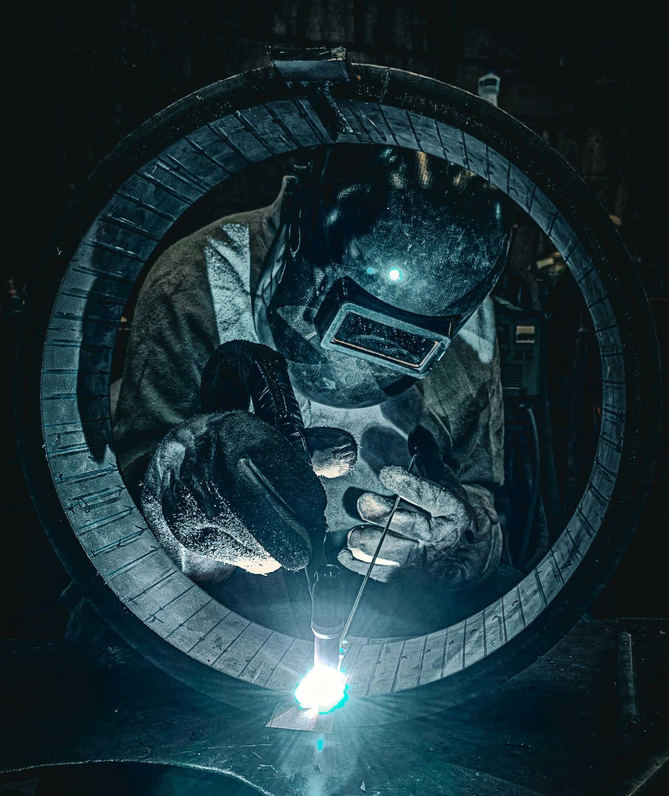

Equipamentos de Proteção Individual (EPIs)
Os EPIs são indispensáveis para garantir a integridade física do trabalhador. Conheça os principais:
Capacete de segurança
Protege contra impactos e quedas de objetos.
Luvas de proteção
Indicadas para proteger as mãos contra cortes, produtos químicos ou temperaturas extremas.
Protetores auriculares
Reduzem a exposição a níveis excessivos de ruído.
Óculos de segurança
Impedem que partículas ou substâncias atinjam os olhos.
Botas com biqueira de aço
Previnem lesões nos pés em ambientes industriais.
